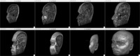
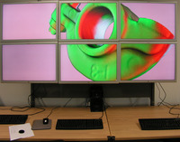
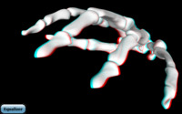
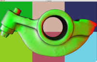

Click on the images to get a high resolution version.
{kind=link}

8-to-1 sort-last decomposition using the eVolve volume rendering demo.
{kind=link}
 A terrain visualization software, eqSmart, on the 24 megapixel display wall at
the University of Zürich (7680x3200)
A terrain visualization software, eqSmart, on the 24 megapixel display wall at
the University of Zürich (7680x3200)

The Equalizer example application running on the same display wall
{kind=link}
eqPly running on a MacBook Pro using a Windows XP machine as a rendering
client in a sort-last configuration.
{kind=link}

The Equalizer example application rendering an anaglyphic stereo image
{kind=link}
{kind=link}

The destination channel of another sort-first configuration.
{kind=link}
 A six pipe sort-last, direct-send configuration using channel colors to
illustrate the database decomposition (model patches) and the parallel result
composition (background)
A six pipe sort-last, direct-send configuration using channel colors to
illustrate the database decomposition (model patches) and the parallel result
composition (background)
 Detailed destination channel from the last figure
Detailed destination channel from the last figure
Volume data set courtesy of Computer Graphics Group, University of Erlangen,
Germany. 3D models courtesy
of Cyberware, Stereolithography Archive
at Clemson University
and Stanford University
Computer Graphics Laboratory.